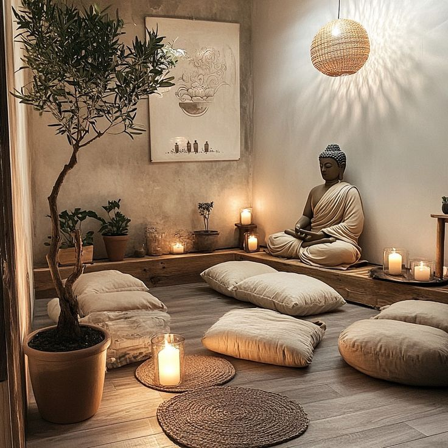

The Temple Within – Stillness & Stoic Practice
“He who is brave is free.” – Seneca
In the silence between thoughts, you find freedom. Stoicism teaches us that our reactions are ours alone. Meditation gives us the presence to witness those reactions as they arise, without being consumed.
